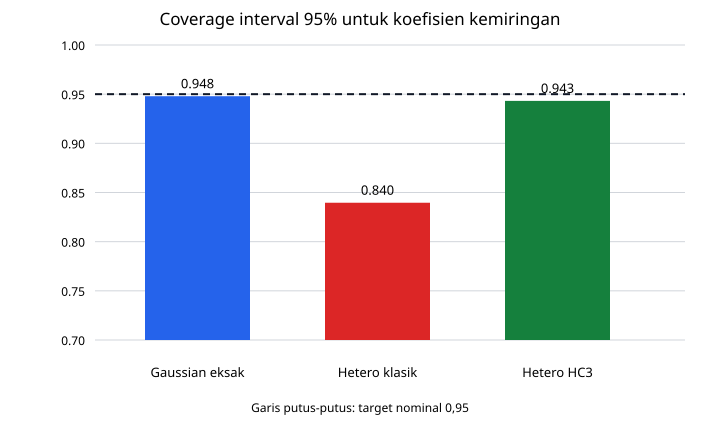

Pertanyaan dan kontrak reproduksi
Laboratorium ini menguji tiga klaim yang harus dipisahkan:
- di bawah model Gaussian homoskedastik, interval \(t\) eksak untuk kemiringan mempunyai coverage mendekati 0,95;
- di bawah mean linear tetapi varians galat yang berubah terhadap desain, OLS tetap hampir tak-bias sementara standard error klasik dapat salah;
- satu titik ber-leverage tinggi dapat mengubah kemiringan secara material, meskipun residual mentahnya tidak tampak ekstrem.
Generator kanonis adalah
simulations/run_c2_simulations.py. Lingkungan terkunci pada Python 3.13.9,
NumPy 2.4.4, PCG64, seed 2026082805, dan 12.000 replikasi. Generator tidak
memakai jaringan atau browser, mempunyai assertion numerik, dan menghasilkan
CSV/SVG statis dengan replay byte-identik.
Desain tetap dan estimator
Untuk eksperimen coverage, \(n=80\) dan \(p=3\). Matriks desain memuat intercept, grid \(x\) dari \(-2\) sampai \(2\), serta satu prediktor sinus yang distandardisasi. Rank \(X\) adalah tiga dan derajat bebas residual adalah 77. Parameter sebenarnya
Pada setiap replikasi dihitung
Skenario eksak memakai \(\varepsilon_i\stackrel{\mathrm{iid}}\sim N(0,1)\) dan interval
Skenario heteroskedastik mempertahankan mean yang sama, tetapi memakai
Ia membandingkan interval klasik dengan interval normal-asimtotik yang memakai kovarians HC3 dari Kovarians OLS di bawah kovarians galat umum.
Hasil coverage
| Skenario | Bias | SD empiris | Mean SE | Coverage 95% |
|---|---|---|---|---|
| Gaussian, interval t eksak | 0,00036 | 0,09554 | 0,09515 | 0,94792 |
| Heteroskedastik, SE klasik | −0,00064 | 0,13953 | 0,09913 | 0,83958 |
| Heteroskedastik, HC3 | −0,00064 | 0,13953 | 0,13860 | 0,94317 |
Hasil pertama memeriksa hukum eksak pada Inferensi Gaussian eksak: proyeksi, t, F, ANOVA, dan prediksi: coverage 0,94792 konsisten dengan fluktuasi Monte Carlo di sekitar 0,95. Pada skenario heteroskedastik, bias OLS tetap sangat kecil, sesuai Kovarians OLS di bawah kovarians galat umum, tetapi standard error klasik 0,09913 jauh di bawah SD empiris 0,13953. Coverage turun menjadi 0,83958. HC3 memberi mean SE 0,13860 dan memulihkan coverage menjadi 0,94317.
Ini bukan bukti bahwa HC3 selalu benar. Eksperimen hanya menguji desain dan kelas gangguan tertentu; ia tidak mencakup mean yang salah, dependensi, atau leverage yang tidak terkendali.

Data lengkap: CSV coverage.
Titik berpengaruh
Eksperimen kedua membangun 40 titik desain moderat, lalu menambahkan satu titik dengan \(x=6\) dan respons yang dinaikkan tujuh unit di atas mean model. Untuk titik tambahan itu diperoleh:
- leverage \(h_{ii}=0{,}89317\);
- residual mentah \(e_i=0{,}48223\);
- Cook distance \(D_i=105{,}90367\);
- kemiringan dengan titik: \(1{,}72771\);
- kemiringan setelah titik dihapus: \(1{,}15449\);
- perubahan absolut kemiringan: \(0{,}57322\).
Residual 0,48 sendiri tidak terlihat luar biasa dibanding gangguan berskala satu. Namun \(1-h_{ii}\) hanya sekitar 0,107, sehingga faktor leverage pada Cook distance sangat besar. Identitas penghapusan-satu Identitas penghapusan-satu menjelaskan perubahan kemiringan itu. Cook distance terbesar di antara 40 titik lain hanya 0,15224.
Data lengkap: CSV pengaruh.
Interpretasi yang diizinkan
Eksperimen menunjukkan bahwa asumsi kovarians menentukan validitas standard error dan bahwa pengaruh adalah gabungan residual serta leverage. Ia tidak memberi izin otomatis untuk menghapus titik terakhir. Tindakan yang benar bergantung pada apakah titik itu salah input, berasal dari populasi sasaran, atau mengungkap wilayah desain yang memang penting. Laporan yang jujur menyertakan analisis dengan dan tanpa titik, mekanisme data, serta perubahan target yang timbul dari eksklusi.